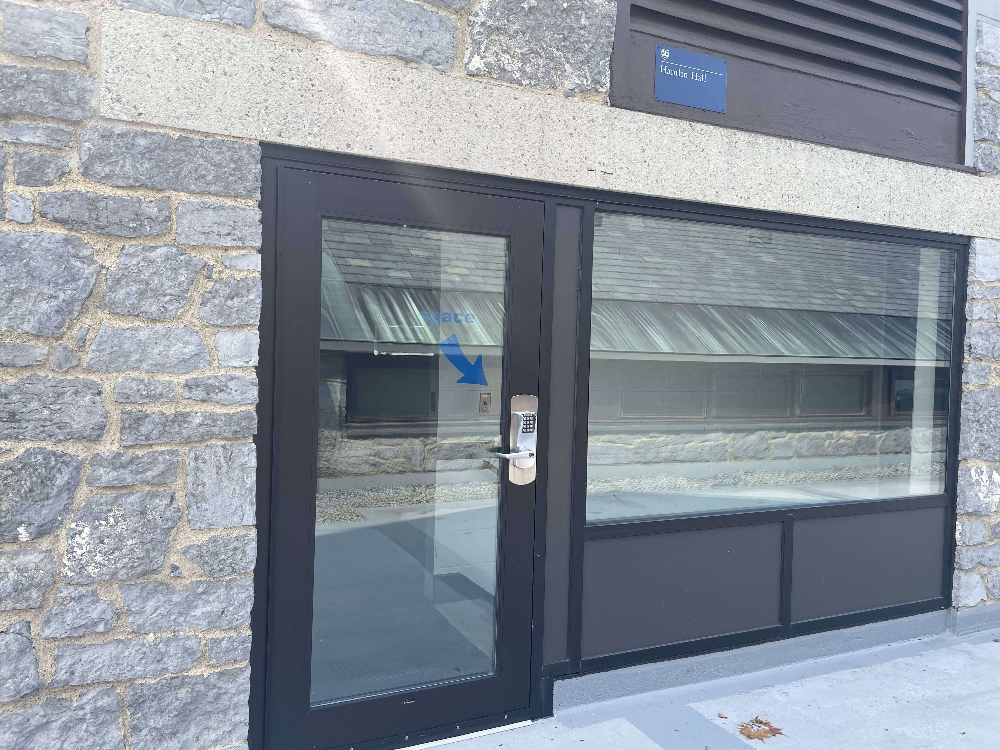
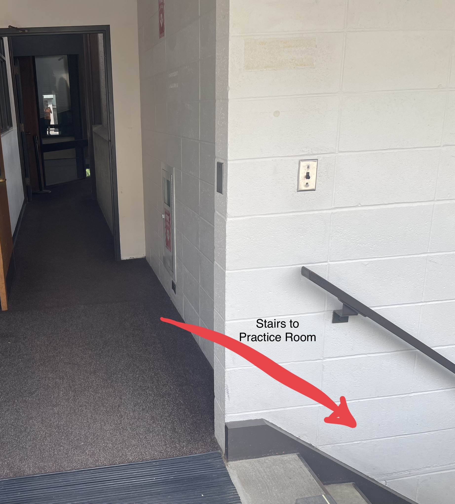
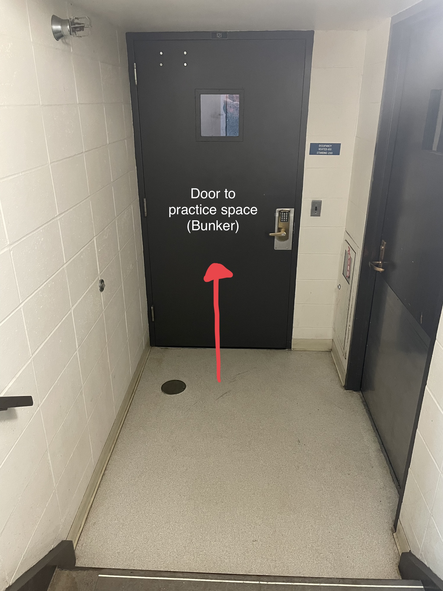

FIC Bunker Directions
Parking (Faculty/Staff parking spaces are available to the public after 5pm for events.)
FIC is the Freeman International Center, and you should enter the building from the patio. If coming from the main Middlebury campus, the patio is to the right of Bicentennial Hall (BiHall). If coming from the FIC parking lot, take the path on the left side of the FIC up the hill to get to the patio. Take the external stairs or ramp to the patio (the red arrow in the photo below)

From the top of the steps or ramp to the FIC patio, go into the building on left "Hamlin Hall" as indicated below (the red arrow in the photo below)

Go in the door for "Hamlin Hall." The door has a blue arrow and the word "Space" on it. It should be open! 
After entering Hamlin Hall building, go down the stairs immediately on your right: 
Finally, at the bottom of the stairs, go through the door straight ahead to get to the drumming practice space: 